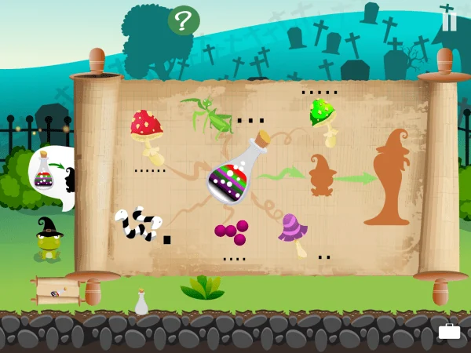
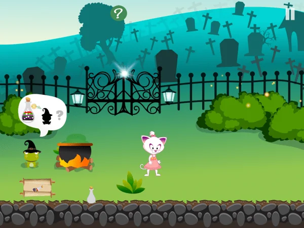

Tiny Story 1 · Aventure point & click


Notes et avis des boutiques
Google Play
4.4
100+
Voir la fiche et les avisApp Store
4.0
Voir la fiche et les avisNotes affichées séparément par boutique. Elles peuvent varier selon le pays et évoluer.
L’aventure
Les gardes de Rhino Island ont envahi Tiny Island. Choisissez Barry, Lizzy, Charry, Mimy ou Wolfy et partez découvrir ce qui se cache derrière cette invasion.
Explorez des lieux colorés, discutez avec les personnages et combinez les objets trouvés pour résoudre les énigmes. Tiny Story 1 Adventure se joue hors ligne et sans publicité. Une page d’aide et des vidéos de solution vous accompagnent si vous êtes bloqué.
Au fil du jeu
Mignon & réconfortant
Rencontrez des personnages adorables, profitez de dialogues légers et résolvez des petites quêtes sans stress.
Énigmes adaptées au tactile
Appuyez pour collecter, utiliser et combiner des objets. Chaque interaction est conçue pour smartphones et tablettes.

Besoin d’aide ? Une guidance douce
Si vous êtes bloqué, suivez les vidéos de solution qui expliquent chaque étape.
